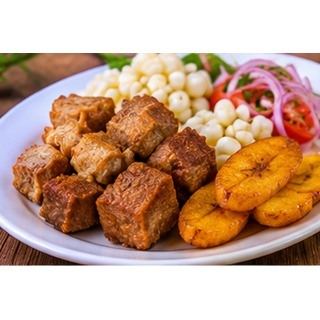

Reseña del cantón
Montalvo es un cantón de Los Ríos reconocido por sus paisajes naturales, ríos y zonas verdes. La agricultura, el comercio y las actividades rurales forman parte de la economía de sus habitantes. Su entorno ofrece espacios para el descanso y el contacto con la naturaleza. Las costumbres locales y las celebraciones comunitarias enriquecen la identidad del cantón.
Población
28.354 habitantes (Censo de Población y Vivienda 2022).
Parroquias
Montalvo (cabecera cantonal).
Economía y cultura
El cantón combina actividades agropecuarias con espacios naturales frecuentados por habitantes de la provincia. Los paisajes, el clima cálido y los cursos de agua cercanos permiten conocer mejor su entorno rural.
Alcalde
Eduardo Troncoso — período 2023–2027.

Fuente: Directorio oficial de alcaldes y alcaldesas de AME.
Platos típicos
Fritada, caldo de manguera y seco de pollo.

Estas preparaciones se documentan como parte de la gastronomía local. Su disponibilidad y preparación pueden variar entre comunidades.
Lugares turísticos
Balnearios de agua dulce y zonas ribereñas; son visitados para recreación familiar y actividades al aire libre.
Hoteles y hospedaje: ubicación y direcciones
Estos establecimientos aparecen en directorios públicos y resultados de mapas consultados. Confirma por teléfono que sigan operando, sus tarifas y disponibilidad antes de viajar.
- Complejo Ecoturístico Refugio
Dirección o referencia: Km 5, vía Montalvo–Balsapamba, sector Pisagua Alto, Montalvo.
Ver ubicación y cómo llegar en Google Maps
Mapa del cantón
Mapa de Google Maps centrado en el cantón: